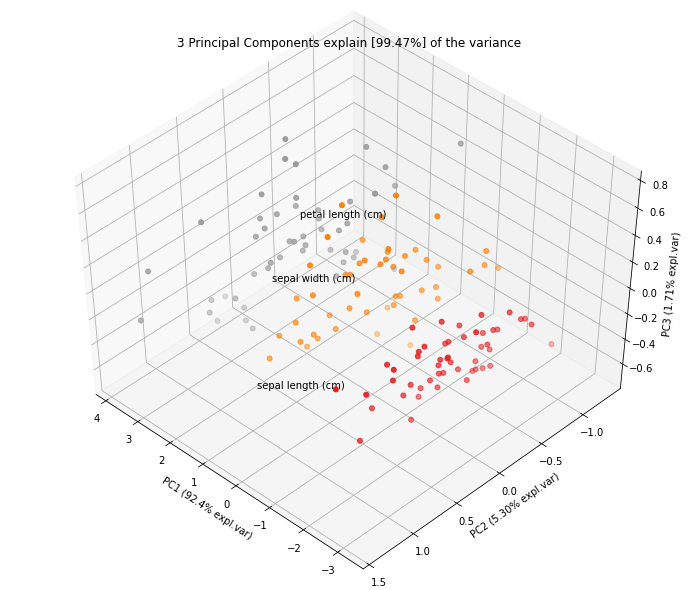
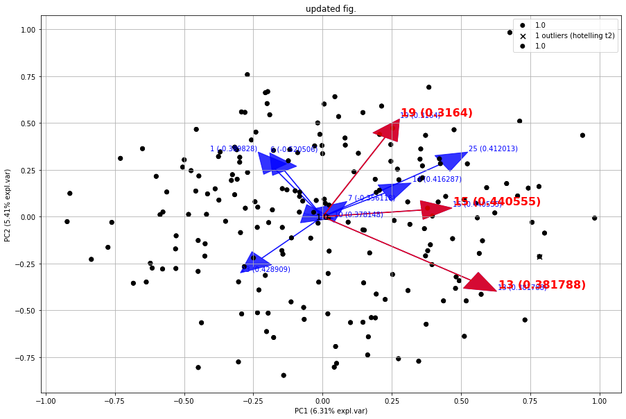

Quickstart
A quick example how perform feature reduction using pca.
import numpy as np
from sklearn.datasets import load_iris
import pandas as pd
# Load pca
from pca import pca
# Load dataset
label = load_iris().feature_names
y = load_iris().target
X = pd.DataFrame(data=load_iris().data, columns=label, index=y)
# Initialize to reduce the data up to the nubmer of componentes that explains 95% of the variance.
model = pca(n_components=0.95)
# Reduce the data towards 3 PCs
model = pca(n_components=3)
# Fit transform
results = model.fit_transform(X)
# Data looks like this:
# X=array([[5.1, 3.5, 1.4, 0.2],
# [4.9, 3. , 1.4, 0.2],
# [4.7, 3.2, 1.3, 0.2],
# [4.6, 3.1, 1.5, 0.2],
# ...
# [5. , 3.6, 1.4, 0.2],
# [5.4, 3.9, 1.7, 0.4],
# [4.6, 3.4, 1.4, 0.3],
# [5. , 3.4, 1.5, 0.2],
#
# y = [0, 0, 0, 0,...,2, 2, 2, 2, 2]
# label = ['sepal length (cm)',
# 'sepal width (cm)',
# 'petal length (cm)',
# 'petal width (cm)']
Compute explained variance
After the fit_transform, the cumulative expained variance is stored together with the explained variance per PC.
# Cumulative explained variance
print(model.results['explained_var'])
# [0.92461872 0.97768521 0.99478782]
# Explained variance per PC
print(model.results['variance_ratio'])
[0.92461872, 0.05306648, 0.01710261]
# Make plot
fig, ax = model.plot()

PCs that cover 95% of the explained variance
The number of PCs can be reduced by setting the n_components parameter. Note that the number of components can never be larger than the number of variables in your dataset. By setting n_components larger than 1, a feature reduction will be performed to exactly that number of components. By setting n_components smaller than 1, it describes the percentage of explained variance that needs to be covered at least. Or in other words, by setting n_components=0.95, the number of components are extracted that cover at least 95% of the explained variance.
# Reduce the data towards 3 PCs
model = pca(n_components=3)
# The number of components are extracted that cover at least 95% of the explained variance.
model = pca(n_components=0.95)
Scatter plot
# 2D plot
fig, ax = model.scatter()
# 3d Plot
fig, ax = model.scatter3d()
|
 |

Biplot
# 2D plot
fig, ax = model.biplot(n_feat=4, PC=[0,1])
# 3d Plot
fig, ax = model.biplot3d(n_feat=2, PC=[0,1,2])

Demonstration of feature importance
This example is created to showcase the working of extracting features that are most important in a PCA reduction. We will create random variables with increasingly more variance. The first feature (f1) will have most of the variance, followed by feature 2 (f2) etc.
# Print the top features.
print(model.results['topfeat'])
# Import libraries
import numpy as np
import pandas as pd
from pca import pca
# Lets create a dataset with features that have decreasing variance.
# We want to extract feature f1 as most important, followed by f2 etc
f1=np.random.randint(0,100,250)
f2=np.random.randint(0,50,250)
f3=np.random.randint(0,25,250)
f4=np.random.randint(0,10,250)
f5=np.random.randint(0,5,250)
f6=np.random.randint(0,4,250)
f7=np.random.randint(0,3,250)
f8=np.random.randint(0,2,250)
f9=np.random.randint(0,1,250)
# Combine into dataframe
X = np.c_[f1,f2,f3,f4,f5,f6,f7,f8,f9]
X = pd.DataFrame(data=X, columns=['f1','f2','f3','f4','f5','f6','f7','f8','f9'])
# Initialize and keep all PCs
model = pca()
# Fit transform
out = model.fit_transform(X)
# Print the top features.
print(out['topfeat'])
# The results show the expected results: f1 is the best, followed by f2 etc
# PC feature
# 0 PC1 f1
# 1 PC2 f2
# 2 PC3 f3
# 3 PC4 f4
# 4 PC5 f5
# 5 PC6 f6
# 6 PC7 f7
# 7 PC8 f8
# 8 PC9 f9
Explained variance plot
model.plot()

Biplot
Make the biplot. It can be nicely seen that the first feature with most variance (f1), is almost horizontal in the plot, whereas the second most variance (f2) is almost vertical. This is expected because most of the variance is in f1, followed by f2 etc. Biplot in 3d. Here we see the nice addition of the expected f3 in the plot in the z-direction.
# 2d plot
ax = model.biplot(n_feat=10, legend=False)
# 3d plot
ax = model.biplot3d(n_feat=10, legend=False)
|
|


Analyzing Discrete datasets
Analyzing datasets that have continuous and catagorical values can be challanging. To demonstrate how to do this, I will use the Titanic dataset. We need to pip install df2onehot first.
pip install df2onehot
import pca
# Import example
df = pca.import_example()
# Transform data into one-hot
from df2onehot import df2onehot
y = df['Survived'].values
del df['Survived']
del df['PassengerId']
del df['Name']
out = df2onehot(df)
X = out['onehot'].copy()
X.index = y
from pca import pca
# Initialize
model1 = pca(normalize=False, onehot=False)
# Run model 1
model1.fit_transform(X)
# len(np.unique(model1.results['topfeat'].iloc[:,1]))
model1.results['topfeat']
model1.results['outliers']
model1.plot()
model1.biplot(n_feat=10)
model1.biplot3d(n_feat=10)
model1.scatter()
model1.scatter3d()
from pca import pca
# Initialize
model2 = pca(normalize=True, onehot=False)
# Run model 2
model2.fit_transform(X)
model2.plot()
model2.biplot(n_feat=4)
model2.scatter()
model2.biplot3d(n_feat=10)
# Set custom transparency levels
model2.biplot3d(n_feat=10, alpha=0.5)
model2.biplot(n_feat=10, alpha=0.5)
model2.scatter3d(alpha=0.5)
model2.scatter(alpha=0.5)
# Initialize
model3 = pca(normalize=False, onehot=True)
# Run model 2
_=model3.fit_transform(X)
model3.biplot(n_feat=3)
Map unseen datapoints into fitted space
After fitting variables into the new principal component space, we can map new unseen samples into this space too. However, there is also normalization step which can be tricky because you now need standardize the values of the unseen samples first based on the previously performed standardization. This step is also integrated in the pca library by simply setting the parameter normalize=True.
# Load libraries
import matplotlib.pyplot as plt
from sklearn import datasets
import pandas as pd
from pca import pca
# Load dataset
data = datasets.load_wine()
X = data.data
y = data.target.astype(str)
col_labels = data.feature_names
# Initialize with normalization and take the number of components that covers at least 95% of the variance.
model = pca(n_components=0.95, normalize=True)
# Get some random samples across the classes
idx=[0,1,2,3,4,50,53,54,55,100,103,104,105, 130, 150]
X_unseen = X[idx, :]
y_unseen = y[idx]
# Label original dataset to make sure the check which samples are overlapping
y[idx]='unseen'
# Fit transform
model.fit_transform(X, col_labels=col_labels, row_labels=y)
# Transform new "unseen" data. Note that these datapoints are not really unseen as they are readily fitted above.
# But for the sake of example, you can see that these samples will be transformed exactly on top of the orignial ones.
PCnew = model.transform(X_unseen)
# Plot PC space
fig, ax = model.scatter(title='Map unseen samples in the existing space.')
# Plot the new "unseen" samples on top of the existing space
ax.scatter(PCnew.iloc[:, 0], PCnew.iloc[:, 1], marker='x', s=200)
Normalizing out PCs
Normalize your data using the principal components. As an example, suppose there is (technical) variation in the fist component and you want that out. This function transforms the data using the components that you want, e.g., starting from the 2nd PC, up to the OC that contains at least 95% of the explained variance.
print(X.shape)
(178, 13)
# Normalize out 1st component and return data
Xnorm = model.norm(X, pcexclude=[1])
# The data remains the same samples and variables but the all variance that covered the 1st PC is removed.
print(Xnorm.shape)
(178, 13)
# In this case, PC1 is "removed" and the PC2 has become PC1 etc
ax = pca.biplot(model, col_labels=col_labels, row_labels=y)
Colors in plots
The default colors that are used in the plots depend on how much information is provided at start. There are many parameters to change the colors in the plots. Here I will demonstrate some of the possibilities.
First, we will load the data and import the libraries.
# Import iris dataset and other required libraries
from sklearn.datasets import load_iris
import pandas as pd
import matplotlib as mpl
import colourmap
# Import pca
from pca import pca
# Class labels
y = load_iris().target
# Initialize pca
model = pca(n_components=3, normalize=True)
# Dataset
X = pd.DataFrame(index=y, data=load_iris().data, columns=load_iris().feature_names)
# Fit transform
out = model.fit_transform(X)
Lets start with the default plot using hte classlabels (y), and change it using a custom cmap.
# The default setting is to color on classlabels (y). These are provided as the index in the dataframe.
model.biplot()
# Use custom cmap for classlabels (as an example I explicitely provide three colors).
model.biplot(cmap=mpl.colors.ListedColormap(['green', 'red', 'blue']))
|
|


If you want to highlight some samples in the graph, you easily change the classlabels. The colors are automatically created using the specified colormap. However, this can cause that the points of interest can still be difficult to find. Therefore it is also possible to set the input colors for each sample manually.
# Set custom classlabels. Coloring is based on the input colormap (cmap).
y[10:15]=4
model.biplot(labels=y, cmap='Set2')
# Set custom classlabels and also use custom colors.
c = colourmap.fromlist(labels, cmap='Set2')[0]
c[10:15] = [0,0,0]
model.biplot(labels=y, c=c)
|
|


The highlight the loadings, all scatterpoints can be removed by setting the cmap to None.
# Remove scatterpoints by setting cmap=None
model.biplot(cmap=None)
# Gradient with white ending using the cmap setting.
model.biplot(labels=y, gradient='#ffffff', cmap=mpl.colors.ListedColormap(['green', 'red', 'blue']))
|
|


{kind=link}
It is also possible to input a fig as parameter to the plot. This will allow to make iterative changes.
from sklearn.datasets import make_friedman1
X, _ = make_friedman1(n_samples=200, n_features=30, random_state=0)
# Init
model = pca()
# Fit
model.fit_transform(X)
# Make plot with blue arrows and text
fig, ax = model.biplot(c=[0,0,0], s=25, arrowdict={'fontsize':10, 'weight':'normal'}, color_arrow='blue', title=None, HT2=True, n_feat=10, visible=True)
# Use the existing fig and create new edits such red arrows for the first three loadings. Also change the font sizes.
fig, ax = model.biplot(c=[0,0,0], s=25, arrowdict={'fontsize':16, 'weight':'bold'}, color_arrow='red', n_feat=3, title='updated fig.', visible=True, fig=fig)
 |